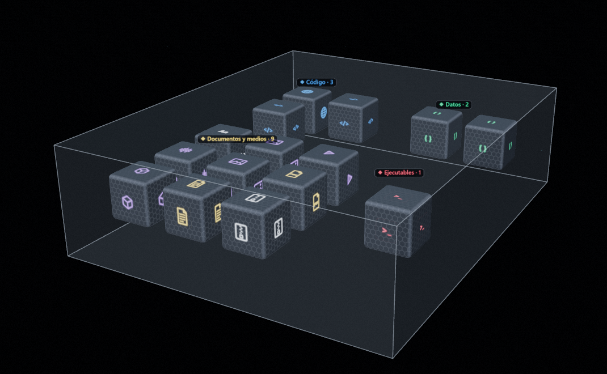
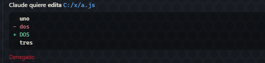

Pregunta, mira y decide
Observar
Es el modo por defecto. Claude solo puede mirar: inspecciona carpetas, archivos y procesos, y responde abriendo y enfocando cubos.


Trabajar
Claude edita solo dentro de la carpeta que elijas y nunca ejecuta programas. Puedes revisar cada cambio, aceptar las ediciones o pedir solo un plan.
Dos proyectos, dos maneras de usarlos
Prisma nació de vxtop y ambos son de virtuanista. Se instalan por separado y no comparten datos.
| Prisma | vxtop | |
|---|---|---|
| Para qué | Hablar y trabajar con Claude | Observar qué hace tu equipo |
| Puede cambiar archivos | Sí, en modo trabajo y en una carpeta | No, nunca |
| Carpetas | Cubos a los que se entra, con cubos dentro | Cubos de 27 celdas de datos |
| Color | El tipo de contenido, como gemas | Quién toca cada archivo |
| Al abrir | Un espacio vacío y la barra de Claude | La vista en vivo del equipo |
| Necesita Claude Code | Sí, para el asistente | No |
| Puerto y datos | 4828 y ~/.prisma | 4827 y ~/.vxtop |
Un color para cada cosa
- ZafiroCódigo
- EsmeraldaDatos
- OroDocumentos y medios
- PlataCarpetas, unidades y otros programas
- RubíEjecutables, borrados y errores
- ClaudeConserva su propio color
Empezar
Necesitas Node.js 18.15 o superior y Chrome o Edge. Para el asistente, Claude Code con la sesión iniciada. Windows es la plataforma más completa, Linux funciona y macOS no está probado.
git clone https://github.com/vxtop/prisma.git cd prisma node server.js # http://127.0.0.1:4828/
Para probarlo con archivos ficticios, usa npm run demo. En Windows, prisma.vbs abre su propia ventana.
El servidor solo escucha en tu equipo. Al usar el asistente, Claude Code envía a Anthropic lo que preguntas y lo que Claude consulta.
Leer la guíaCómo funciona el asistente